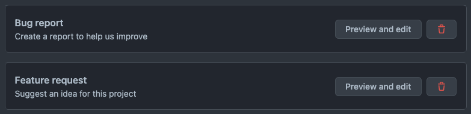
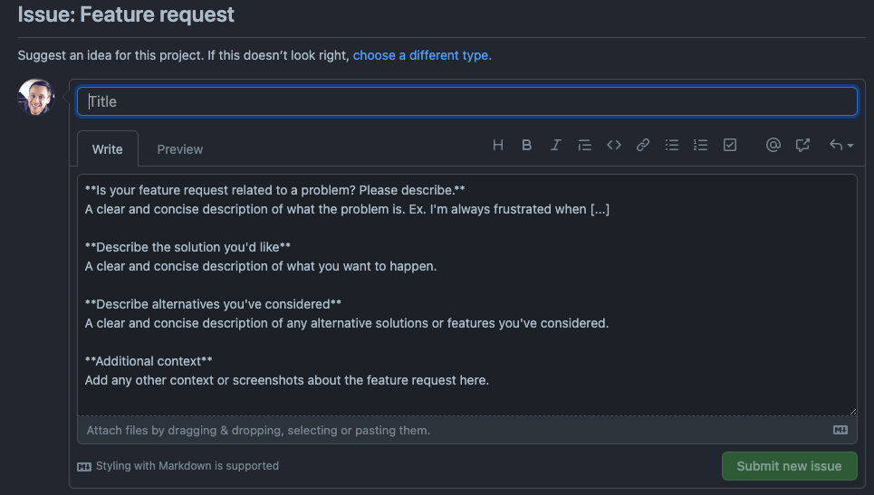
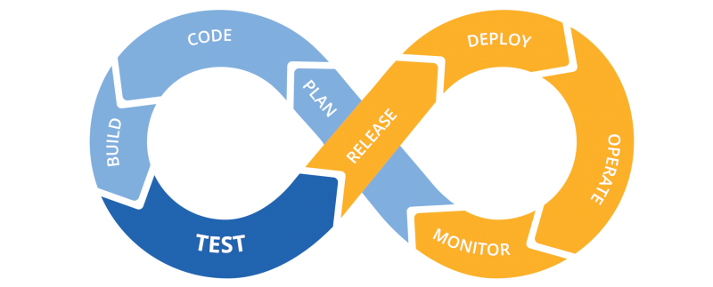
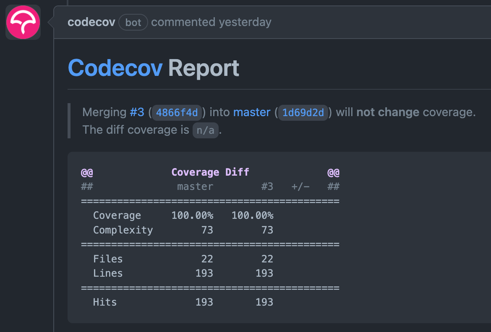
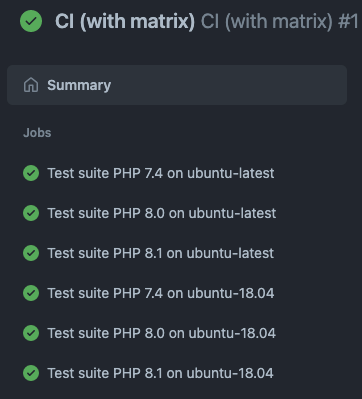
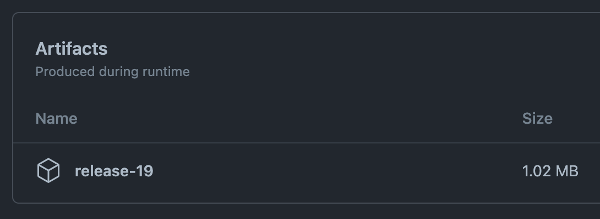

Setting up a solid Github CI/CD
Hello, nice to meet you 👋
- I'm a PHP developer
- Employed at Baldwin
- Long time Drupal developer
- Questions / Want to talk?
Session outline
- Introduction to GitHub actions
- Have a quick glance at the code
- Setting up a repository
- Configuring a CI workflow
- Configuring a build & deploy workflow
- Hungry for more? 🍔
Demo repository
A fully working example is available at https://github.com/robiningelbrecht/continuous-integration-example
CI/CD, what's up with that?
Acronyms for
- Continuous integration
- Continuous delivery / deployment
Continuous integration
DevOps best practice where developers frequently merge code changes into a central repository where automated builds and tests run.
Continuous delivery
An automated release process where you can deploy your application any time by clicking a button.
GitHub actions
GitHub actions
A CI/CD platform that allows you to
- Automate your tests
- Automate your builds
- Automate your deployment pipeline
https://docs.github.com/en/actions/learn-github-actions/understanding-github-actions
Workflows
- Configurable automated process (YAML)
- Triggered by an event, manually, or at a defined schedule
- Will run one or more jobs
Runners
A runner is a server that runs your workflows when they're triggered
- Ubuntu Linux
- Microsoft Windows
- macOS
- Self-hosted
Events
An event is a specific activity in a repository that triggers a workflow run
- PR is created
- Issue was openend
- Commit was pushed
https://docs.github.com/en/actions/reference/events-that-trigger-workflows
Jobs
Contains a set of steps that execute on the same runner. Each step is either a
- shell script
- a pre-defined action
Steps are executed in order and are dependent on each other
Example
name: learn-github-actions
on: [push] # Event
jobs:
install-dependencies:
runs-on: ubuntu-latest # Runner
steps: # Actions
- name: Setup PHP 8.1 with Xdebug 3.x # Pre-defined action
uses: shivammathur/setup-php@v2
with:
php-version: '8.1'
coverage: xdebug
- name: Install dependencies # Shell script
run: composer install --prefer-dist
The code

Pizza anyone? 🍕
Small and easy testable app to order pizza
- Decorator pattern
- Builder Pattern
- Factory Pattern
https://github.com/robiningelbrecht/continuous-integration-example/tree/master/src
Decorator pattern
$pizza = new ExtraCheese(new Pepperoni(new BasicPizza(Size::MEDIUM, Crust::THIN)));
$pizza->getPrice();
// [
// "amount": "1575",
// "currency": "EUR"
// ]
$pizza->getDescription();
// Medium pizza, Thin crust, Tomato sauce, Cheese, Extra cheese, Pepperoni
Using decorators you can wrap objects countless number of times since both target objects and decorators follow the same interface. The resulting object will get a stacking behavior of all wrappers.
Builder pattern
$pizza = PizzaBuilder::fromSizeAndCrust(Size::MEDIUM, Crust::THIN)
->withToppings(
Topping::EXTRA_CHEESE,
Topping::PEPPERONI
)
->build();
$pizza->getPrice();
// [
// "amount": "1575",
// "currency": "EUR"
// ]
$pizza->getDescription();
// Medium pizza, Thin crust, Tomato sauce, Cheese, Extra cheese, Pepperoni
Builder is a creational design pattern, which allows constructing complex objects step by step.
Factory pattern
$pizza = PizzaFactory::pepperoni(Size::MEDIUM, Crust::THIN)
$pizza->getPrice();
// [
// "amount": "1575",
// "currency": "EUR"
// ]
$pizza->getDescription();
// Medium pizza, Thin crust, Tomato sauce, Cheese, Extra cheese, Pepperoni
(Abstract) Factory is a creational design pattern, which solves the problem of creating entire product families without specifying their concrete classes.
Repository settings

Configure your repository
- Set up a default branch
- Add branch protection rules
- Configure issue & PR templates (optional)
The default branch
You can set the default branch to whatever you want, but usually "main" or "master" are used.

https://github.com/username/repository/settings/branches
Branch protection rules
Important to ensure code quality and have a solid CI
- Disable force pushing
- Prevent branches from being deleted
- Rrequire status checks before merging
Branch protection rules

All other options should stay unchecked... for now 😎
Issue & PR templates
Standardize the information for issues and pull requests in your repository
Issue & PR templates
CI Workflow
CI Workflow
Contains two jobs that should ensure code quality
- Test suite
- PHPStan & PHPcs
name: CI
on:
pull_request:
workflow_dispatch:
1st job: Test suite
Install PHP and Xdebug
# https://github.com/marketplace/actions/setup-php-action
name: Setup PHP 8.1 with Xdebug 3.x
uses: shivammathur/setup-php@v2
with:
php-version: '8.1'
coverage: xdebug
Test suite
Pull in the code and install dependencies
# https://github.com/marketplace/actions/checkout
- name: Checkout code
uses: actions/checkout@v2
- name: Install dependencies
run: composer install --prefer-dist
Run test suite
- name: Run test suite
run: vendor/bin/phpunit --testsuite unit --fail-on-incomplete --log-junit junit.xml --coverage-clover clover.xml
- --fail-on-incompleteForces PHPUnit to fail on incomplete tests
- --log-junit junit.xmlGenerates XML file to publish the test results
- --coverage-clover clover.xmlGenerates an XML file to check the test coverage
Visualise test results
# https://github.com/marketplace/actions/publish-unit-test-results
- name: Publish test results
uses: EnricoMi/publish-unit-test-result-action@v1.31
if: always()
with:
files: "junit.xml"
check_name: "Unit test results"
Test coverage insights
with codecov.io and generated clover.xml report
# https://github.com/marketplace/actions/codecov
- name: Send test coverage to codecov.io
uses: codecov/codecov-action@v2.1.0
with:
files: clover.xml
fail_ci_if_error: true # optional (default = false)
verbose: true # optional (default = false)
Test coverage insights
Minimum test coverage
Ensure minimum test coverage across the project.
- name: Check minimum required test coverage
run: |
CODE_COVERAGE=$(vendor/bin/coverage-checker clover.xml 90 --processor=clover-coverage)
echo ${CODE_COVERAGE}
if [[ ${CODE_COVERAGE} == *"test coverage, got"* ]] ; then
exit 1;
fi
🔥PRO tip🔥
Run your test suite against multiple PHP versions and/or operating systems
name: Test suite PHP ${{ matrix.php-versions }} on ${{ matrix.operating-system }}
runs-on: ${{ matrix.operating-system }}
strategy:
matrix:
operating-system: ['ubuntu-latest', 'ubuntu-18.04']
php-versions: [ '7.4', '8.0', '8.1' ]
steps:
- name: Setup PHP ${{ matrix.php-versions }} with Xdebug 3.x
uses: shivammathur/setup-php@v2
with:
php-version: ${{ matrix.php-versions }}
coverage: xdebug
🔥PRO tip🔥
This should result in a workflow run for all possible combinations in the matrix
2nd job: Static code analysis & coding standards
- PHPStan PHPStan focuses on finding errors in your code without actually running it
- PHP Coding Standards Fixer The PHP Coding Standards Fixer (PHP CS Fixer) tool fixes your code to follow standards
Install PHP & dependencies
# https://github.com/marketplace/actions/setup-php-action
- name: Setup PHP 8.1
uses: shivammathur/setup-php@v2
with:
php-version: '8.1'
# https://github.com/marketplace/actions/checkout
- name: Checkout code
uses: actions/checkout@v2
- name: Install dependencies
run: composer install --prefer-dist
Run static code analysis & coding standards
Run static code analyser
- name: Run PHPStan
run: vendor/bin/phpstan analyse
Check coding standards
- name: Run PHPcs fixer dry-run
run: vendor/bin/php-cs-fixer fix --dry-run --stop-on-violation --config=.php-cs-fixer.dist.php
Update repository settings
Tighten branch protection rules by adding extra required status checks
Both jobs in CI workflow need to succeed before the PR can be merged.
Putting it all together
Example pull requests
Build & deploy Workflow
Build & deploy Workflow
Contains two jobs
- Create a build
- Deploying build to a remote server
name: Build & deploy
on:
workflow_dispatch:
1s job: Create build
Only run when initialized with proper branches
if: github.ref_name == 'master' || github.ref_name == 'development'
name: Create build ${{ github.run_number }} for ${{ github.ref_name }}
runs-on: ubuntu-latest
Install PHP & dependencies
# https://github.com/marketplace/actions/checkout
- name: Checkout code
uses: actions/checkout@v2
# https://github.com/marketplace/actions/setup-php-action
- name: Setup PHP 8.1
uses: shivammathur/setup-php@v2
with:
php-version: '8.1'
- name: Install dependencies
run: composer install --prefer-dist --no-dev
Create atrifact
# https://github.com/marketplace/actions/upload-a-build-artifact
- name: Create artifact
uses: actions/upload-artifact@v3
with:
name: release-${{ github.run_number }}
path: |
src/**
vendor/**
Verify created artifacts
Can be downloaded and verified from the workflow summary page.
 https://github.com/robiningelbrecht/continuous-integration-example/actions/runs/2030536472Hungry for more?